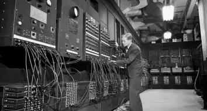
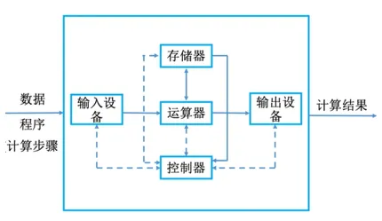
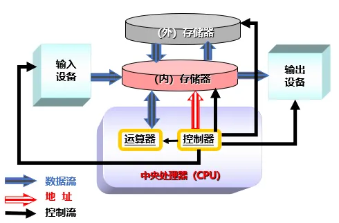

第1章 计算机基础知识
世界上第一台计算机
1946 年 2 月，在美国宾夕法尼亚大学，世界上第一台电子数字计算机 ENIAC（Electronic Numerical Integrator And Calculator，电子数值积分和计算机）诞生了，标志着计算机时代的到来。

ENIAC 的主要参数：
| 项目 | 参数 |
|---|---|
| 运算速度 | 5000 次加法/秒 |
| 重量 | 28 吨 |
| 占地 | 170 m² |
| 电子管 | 18800 只 |
| 继电器 | 1500 个 |
| 功率 | 150 KW |
冯·诺依曼计算机
1944 年，美籍匈牙利数学家 冯·诺依曼 提出计算机基本结构和工作方式的设想，为计算机的诞生和发展提供了理论基础。
时至今日，尽管计算机软硬件技术飞速发展，但计算机本身的体系结构并没有明显的突破，当今的计算机仍属于冯·诺依曼架构。
其理论要点如下：
- 计算机硬件设备由 运算器、控制器、存储器、输入设备和输出设备 五部分组成。
- 存储程序思想：把计算过程描述为由许多命令按一定顺序组成的程序，然后把程序和数据一起输入计算机，计算机对已存入的程序和数据处理后，输出结果。
- 计算机采用 二进制。
冯·诺依曼设计了第一台具有存储程序功能的计算机 EDVAC。

现代计算机结构以 存储器为核心。

计算机发展阶段
人们根据计算机的性能和使用主要元器件的不同，将计算机的发展划分成四个阶段。
| 代数 | 年份 | 主要元器件 |
|---|---|---|
| 第一代 | 1946—1958 | 电子管 |
| 第二代 | 1959—1964 | 晶体管 |
| 第三代 | 1965—1970 | 集成电路 |
| 第四代 | 1971—至今 | 大规模集成电路 |
主要人物和事件
图灵及图灵奖
艾伦·麦席森·图灵（Alan Mathison Turing），英国数学家。他的图灵机模型为计算机的逻辑工作方式奠定了基础。
图灵机将人们使用纸笔进行数学运算的过程进行抽象，由一个虚拟的机器替代人们进行数学运算。
图灵奖由美国计算机协会（ACM）于 1966 年设立，专门奖励那些对计算机事业作出重要贡献的个人。它是计算机界最负盛名、最崇高的奖项之一，有“计算机界的诺贝尔奖”之称。
教材指出：目前获得该奖项的华人学者只有 姚期智教授 一人。
戈登·摩尔及摩尔定律
戈登·摩尔，美国科学家、企业家，英特尔公司创始人之一。
摩尔定律：当价格不变时，集成电路上可容纳的元器件数目，约每隔 18～24 个月增加一倍，性能也将提升一倍。
Ada Lovelace
Ada Lovelace 是世界上第一位给计算机写程序的人，是一位女程序员。
信息论之父
克劳德·香农（Claude Shannon） 提出了信息熵的概念，为信息论和数字通信奠定了基础。
董铁宝
董铁宝是“中国第一个程序员”。
董铁宝 1945 年赴美国学习，在伊利诺伊大学学习、研究时，参与了第一代电子计算机伊利亚克机的设计、编程和使用。1956 年回到中国并任教于北京大学。
王选
王选是计算机文字信息处理专家、计算机汉字激光照排技术创始人、当代中国印刷业革命的先行者，被称为“汉字激光照排系统之父”，被誉为“有市场眼光的科学家”。
计算机的分类
按相对功能规模分类
- 巨型机，如 CYBER205 机、中国银河 II 机
- 大型机
- 中型机，如 IBM 360、370
- 小型机，如 DEC 公司的 VAX-11、Alpha 系列机
- 微型机，如 PC 机
按结构模式分类
- 集中式
- 计算机网络
集中式系统是一个或多个用户同时使用一台计算机，又可分为：
- 单用户机，如 PC 机
- 多用户机，如 DEC 公司的 ALPHA 系列机、IBM 360 机
计算机在现代社会中的应用
计算机在现代社会中的主要应用包括：
- 科学计算（数值计算）
- 数据处理
- 自动控制（过程控制）
- 办公自动化（OA）
- 计算机辅助设计（CAD）和辅助制造（CAM）
- 计算机辅助教学 CAI（Computer Assisted Instruction）
- 智能模拟
- 通信
- 信息网络
随堂检测
单项选择题
1. 以下哪位科学家被称为“博弈论之父”“现代计算机之父”？（ ）
- A. 图灵
- B. 冯·诺依曼
- C. 林纳斯·托瓦茨
- D. 本贾尼·斯特劳斯特卢普
查看答案
答案：B
2. 冯·诺依曼计算机的设计思想主要有（ ）。
- 存储程序
- 二进制表示
- 微程序式
- 局部性原理
- A. 1、3
- B. 2、3
- C. 2、4
- D. 1、2
查看答案
答案：D
3. 以下说法中正确的是（ ）。
- A. 计算机系统包括硬件系统和软件系统
- B. 小型机也叫做微机
- C. 数字计算机可直接处理连续变化的模拟量
- D. 主机包括 CPU、显示器
查看答案
答案：A
4. 在计算机内部，用来传送、存储、加工处理的数据或指令（命令）都是以（ ）形式进行的。
- A. 十进制码
- B. 八进制码
- C. 二进制码
- D. 十六进制码
查看答案
答案：C
5. 微型计算机的问世是由于（ ）的出现。
- A. 中小规模集成电路
- B. 晶体管电路
- C. （超）大规模集成电路
- D. 电子管电路
查看答案
答案：C
6. 图灵（Alan Turing）是（ ）。
- A. 美国人
- B. 英国人
- C. 德国人
- D. 匈牙利人
查看答案
答案：B
7. 在下面各世界顶级的奖项中，为计算机科学与技术领域作出杰出贡献的科学家设立的奖项是（ ）。
- A. 沃尔夫奖
- B. 诺贝尔奖
- C. 菲尔兹奖
- D. 图灵奖
查看答案
答案：D
8. 第一个给计算机写程序的人是（ ）。
- A. Alan Mathison Turing
- B. Ada Lovelace
- C. John von Neumann
- D. John Mc-Carthy
查看答案
答案：B
不定项选择题
9. 下列关于图灵奖的说法中，正确的有（ ）。
- A. 图灵奖是由电气和电子工程师协会（IEEE）设立的
- B. 目前获得该奖项的华人学者只有姚期智教授一人
- C. 其名称取自计算机科学的先驱、英国科学家艾伦·麦席森·图灵
- D. 它是计算机界最负盛名、最崇高的一个奖项，有“计算机界的诺贝尔奖”之称
查看答案
答案：B、C、D
10. 美籍匈牙利数学家冯·诺依曼对计算机科学发展所做出的贡献包括（ ）。
- A. 提出理想计算机的数学模型，成为计算机科学的理论基础
- B. 提出存储程序工作原理，对现代电子计算机的发展产生深远影响
- C. 设计出第一台具有存储程序功能的计算机 EDVAC
- D. 采用集成电路作为计算机的主要功能部件
查看答案
答案：B、C